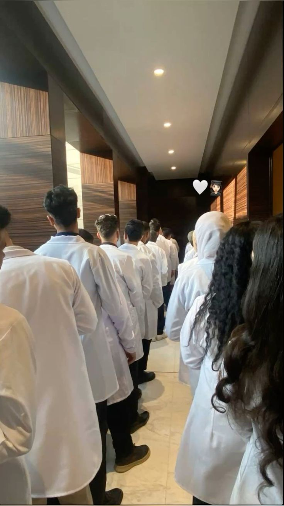
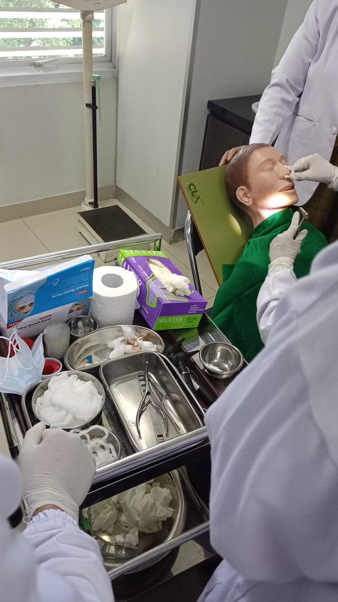
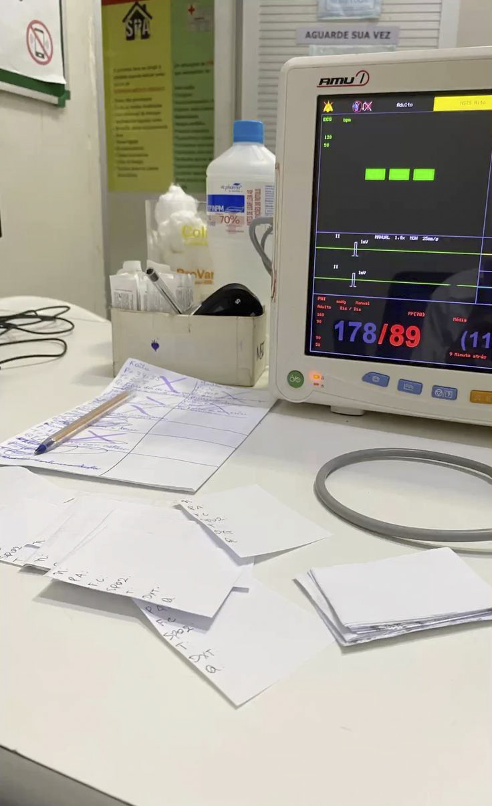
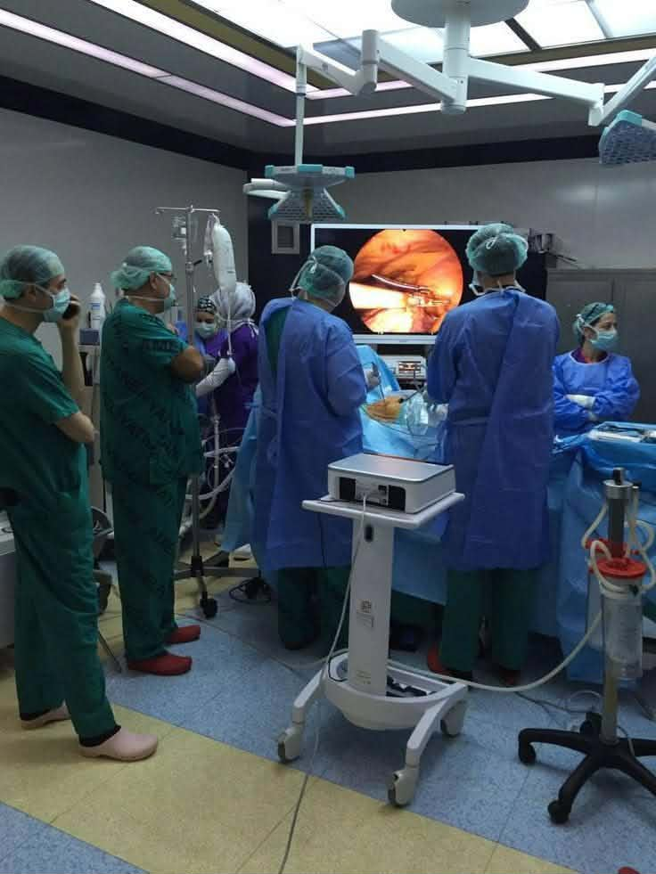
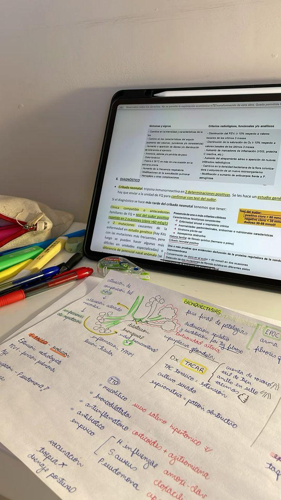
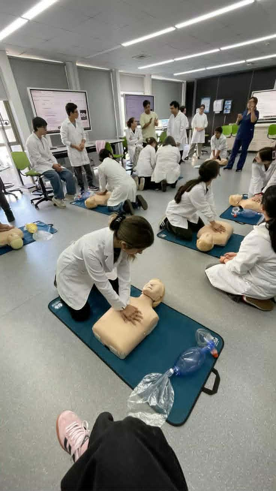
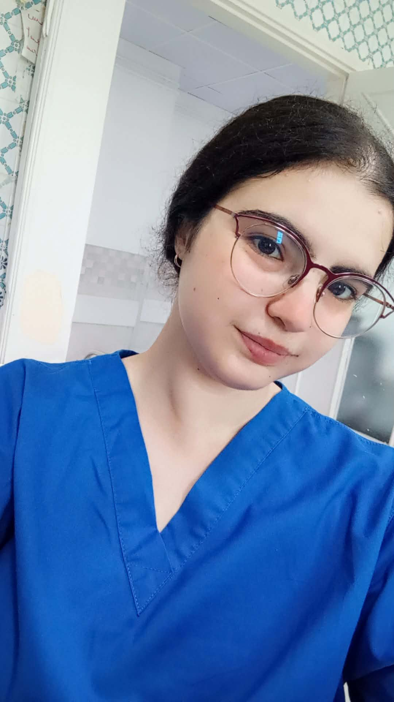

Le carnet où je note ce que j'apprends, ce que je vois, et ce que je retiens — semaine après semaine.
Je suis étudiante en Anesthésie-Réanimation à Upsat Sousse. Cette page rassemble les souvenirs de ma première année : les premières fois au bloc, ce que j'ai compris (et pas compris) sur les gaz, les moniteurs et les protocoles, et les visages de ceux qui m'ont appris le métier.






État réversible associant perte de conscience, analgésie et parfois relâchement musculaire, obtenu par des agents anesthésiques.
Surveillance continue des constantes vitales : fréquence cardiaque, SpO2, pression artérielle, capnographie (CO2 expiré).
Bloque la transmission nerveuse dans une zone précise du corps, sans perte de conscience (ex : rachianesthésie, péridurale).
Médecin anesthésiste-réanimateur et technicien anesthésiste travaillent en binôme, avant, pendant et après l'intervention.
Premiers cours de physiologie et d'anatomie appliquée à l'anesthésie : le système respiratoire, le système cardiovasculaire, et les bases de la pharmacologie des agents anesthésiques.
Premier contact avec le matériel : masque facial, canule de Guedel, laryngoscope, sonde d'intubation. Apprentissage des règles d'asepsie avant chaque geste.
Découverte du monitorage peropératoire : SpO2, ECG, pression artérielle non invasive, capnographie. Observation d'une induction anesthésique de A à Z.
Apprentissage du protocole de vérification avant chaque intervention : identité du patient, allergies, jeûne, voies veineuses, matériel de réanimation à portée de main.
Évaluation des gestes de base : pose de voie veineuse périphérique, ventilation au masque, lecture d'un tracé de scope. Premiers réflexes face à une désaturation.
Approfondir la réanimation et les situations d'urgence, et observer mes premières anesthésies locorégionales aux côtés de l'équipe du bloc.
